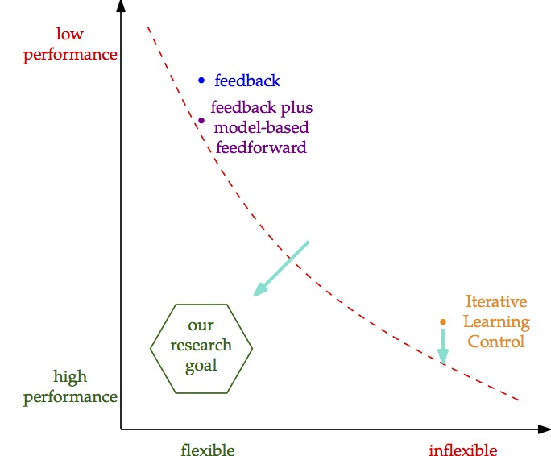

Arizona
The Océ Arizona printer is a large flatbed printer (4m x 2m) for printing large format objects on different media, see Océ's webpage for more information. We use our Arizona in the lab for research and education on learning control, system identification, multivariable control, and robust control. In addition, the Arizona exhibits interesting phenomena including inferential control and position dependent dynamics. On this page, more information on the Arizona is provided.
Arizona in the IEEE Control Systems Magazine
Our Arizona printer is mentioned in the new issue of Control Systems Magazine
BEP projects on the Arizona: Achieving high performance and flexibility
Recently, two B.Sc. students, Koen van Eekelen and Roel Vromans, have been able to draw some interesting conclusions on our recent research:
In particular, in our recent research, we have been developing new methods for advanced feedforward. Our new algorithms combine the flexibility of model-based feedforward with the excellent performance obtained by learning control algorithms. Indeed, traditional model-based feedforward (e.g., mass-feedforward) are very flexible with respect to reference changes, but only achieve reasonable performance. ILC on the other hand is able to achieve almost perfect performance, but is very inflexible to reference changes. This trade-off in traditional methods can be seen as follows:

Want to learn about these learning control and advanced feedforward control methods? See the Teaching page for both the Eindhoven University of Technology M.Sc. course and the The High Tech Institute course on Advanced feedforward control.
Further details on these techniques can be found in, e.g.,
Optimality and flexibility in iterative learning control for varying tasks [preprint|link]
Jurgen van Zundert, Joost Bolder, and Tom Oomen
Automatica, 67, 295-302, 2016
Intelligente regeltechniek voor nieuwe generatie mechatronica [pdf]
Joost Bolder, Frank Boeren, and Tom Oomen
Aandrijftechniek, 10:22-24 (In Dutch), 2014
BEP projects on the Arizona
In recent BEP projects, we have aimed to improve our earlier work on at least two aspects. First, the pen mechanism has been redesigned to allow for more colors, etc. A very nice design has been made by Paul van den Hoogenhof:
The design is presently still under construction, and we hope to use it on our experimental setup soon!
Also, the generation of trajectories has been studies by Joey Reinders. Joey made significant progress to generate optimal 2D reference trajectories:
BEP projects on the Arizona
The Arizona is a UV-printer. Unfortunately, this means that we are not allowed to use it for printing in our lab for safety reasons. With a team of highly skilled BEP students, we have started the design of a writing mechanism. The eventual goal is to be able to visually demonstrate printing quality. Interestingly, writing means that all axes of the printer are actuated simultaneously, instead of normal printing where the gantry does not move during printing.
The initial design and construction of the printing mechanism is done by Roy Jacobs, and the reference generators are made by Joey Reinders (and supervision by Joost Bolder, Jurgen van Zundert, Lennart Blanken, and Tom Oomen). The present results are shown in the following youtube movie:
Interestingly, the initial design of the writing mechanism was 3D-printed by Roy using his 3D printer.
{kind=link}
In future projects, the mechanism and control will be further enhanced. In addition, creative ideas are encouraged, feel free to contact us if you have interesting ideas for a (BEP or other) project.
Official transfer of Arizona flatbed printer to the CST group (October 2014)
On October 2, 2014, we celebrated the official transfer of the Arizona flatbed printer with Tim Klaassen, Martijn van Hoorn, and Sjirk Koekebakker from Océ Technologies.
 |
See here for more pictures!
Reports on the Arizona drawing project
Visualizing Performance of Iterative Learning Control with Basis Functions on an Industrial Flatbed Printer
Koen van Eekelen
B.Sc. thesis, CST 2016.061, Eindhoven University of Technology, 2016
Visualizing Performance of Lifted Iterative Learning Control on an Industrial Flatbed Printer
R.J.P.M. Vromans
B.Sc. thesis, CST 2016.058, Eindhoven University of Technology, 2016
Motion planning of the Arizona flatbed printer
R.P. de Fretes
B.Sc. thesis, Eindhoven University of Technology, 2016
Design of a pen holding mechanism for the Arizona flatbed printer
P.M. van den Hoogenhof
B.Sc. thesis, Eindhoven University of Technology, 2016
Design of a universal pen holding mechanism with linear actuation for the Arizona flatbed printer
R.H.E.M. Jacobs
B.Sc. thesis, CST 2015.070, Eindhoven University of Technology, 2015
Hand writing control, with application to the Arizona flatbed printer
J.M.F. Reinders
B.Sc. thesis, CST 2015.075, Eindhoven University of Technology, 2015
Related research
For related research publications, see
Optimality and flexibility in iterative learning control for varying tasks [preprint|link]
Jurgen van Zundert, Joost Bolder, and Tom Oomen
Automatica, 67, 295-302, 2016
Flexibility and Robustness in Iterative Learning Control: With Applications to Industrial Printers
Joost Bolder
Ph.D. Thesis, defense date September 2, 2015, supported by Océ
Data-driven optimal ILC for multivariable systems: Removing the need for L and Q filter design [pdf]
Joost Bolder and Tom Oomen
In Proceedings of the 2015 American Control Conference, Chicago, Illinois, United States, 2015
Intelligente regeltechniek voor nieuwe generatie mechatronica [pdf]
Joost Bolder, Frank Boeren, and Tom Oomen
Aandrijftechniek, 10:22-24 (In Dutch), 2014
Using iterative learning control with basis functions to compensate medium deformation in a wide-format inkjet printer [preprint|link]
Joost Bolder, Tom Oomen, Sjirk Koekebakker, and Maarten Steinbuch
IFAC Mechatronics, Invited paper, 24(8): 944-953, 2014
Rational basis functions in iterative learning control - With experimental verification on a motion system [preprint|link]
Joost Bolder and Tom Oomen
IEEE Transactions on Control Systems Technology, 23(2), 722-729, 2015
Aspects in Inferential Iterative Learning Control: a 2D Systems Analysis
Joost Bolder, Tom Oomen, and Maarten Steinbuch
In Proceedings of the 52nd IEEE Conference on Decision and Control, Los Angeles, California, United States, 2014
On inferential iterative learning control: with example on a printing system [pdf]
Joost Bolder, Tom Oomen, and Maarten Steinbuch
In Proceedings of the 2014 American Control Conference, 1827-1832, Portland, Oregon, United States, 2014
Exploiting rational basis functions in iterative learning control [pdf]
Joost Bolder, Tom Oomen, and Maarten Steinbuch
In Proceedings of the 51th IEEE Conference on Decision and Control, 7321-7326, Florence, Italy, 2013
Iterative learning control with basis functions for media positioning in scanning inkjet printers [pdf|link]
Joost Bolder, Sjirk Koekebakker, Bas Lemmen, Tom Oomen, Okko Bosgra, and Maarten Steinbuch
In 2012 IEEE Multi-conference on Systems and Control, invited paper, 1255-1260, Dubrovnik, Croatia, 2012
Intelligent feedforward: increasing performance and extrapolation capabilities with iterative learning control [pdf|poster]
Joost Bolder, Jurgen van Zundert, Tom Oomen, Sjirk Koekebakker, and Maarten Steinbuch
In Proceedings of the 2nd DSPE Conference on Precision Mechatronics, 127-128, Sint-Michielsgestel, The Netherlands, 2014
Inferential Iterative Learning Control: Internal Stability and Performance Aspects [pdf]
Joost Bolder, Tom Oomen, Sjirk Koekebakker, and Maarten Steinbuch
In Raffaella Carloni, Mircea Lazar, and Ton van den Boom, editors, 33nd Benelux Meeting on Systems and Control, 52, Heijen, The Netherlands, 2014
Iterative Learning Control with Rational Basis Functions [pdf]
Joost Bolder, Tom Oomen, Sjirk Koekebakker, Okko Bosgra, and Maarten Steinbuch
In Michel Kinnaert and Alain Vande Wouwer, editors, 32nd Benelux Meeting on Systems and Control, 58, Houffalize, Belgium, 2013
Learning control systems for high performance printing [pdf|poster]
Joost Bolder, Tom Oomen, Sjirk Koekebakker, Okko Bosgra, and Maarten Steinbuch
In Proceedings of the 1st DSPE Conference on Precision Mechatronics, page 111, Deurne, The Netherlands, 2012
Arizona team
The Arizona is being used to profile various advanced motion control algorithms and is in the lab of the Control Systems Technology group. To enhance demonstration purposes, various plotting options are being developed, which are outlined below.
At the moment, the following team of people are working on the Arizona
Lennart Blanken
Tom Oomen
Robin de Rozario
Jeroen Willems
Jurgen van Zundert
Earlier, the following people have contributed to the Arizona project
Joost Bolder
Koen van Eekelen
Ramón de Fretes
Roy Jacobs
Marc Janssens
Paul van den Hoogenhof
Stephan Kleinendorst
Joey Reinders
Roel Vromans
Also, we greatly acknowledge the support by
Dedlef Bartels (Océ)
Sjirk Koekebakker (Océ)
Maarten Steinbuch (CST